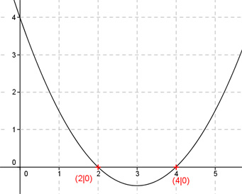

Aufgabe 16 Eine um den Faktor 0,5 gestauchte und nach oben geöffnete Parabel geht durch die Punkte (4|0) und (2|0). Wie lautet ihre Funktionsgleichung?  Die Punkte (4|0) und (2|0) sind Nullstellen der Funktion. Die Funktionsgleichung kann deswegen in der Form f(x) = a(x - x01)(x - x02) mit Linearfaktoren geschrieben werden. Eine um den Faktor 0,5 gestauchte und nach oben geöffnete Parabel bedeutet: a = 0,5. Die Punkte (4|0) und (2|0) eingesetzt (x(01) = 4, x(02) = 2): f(x) = 0,5(x - 4)(x - 2) f(x) = 0,5(x2 - 6x + 8) Gesuchte Funktionsgleichung: f(x) = 0,5x2 - 3x + 4